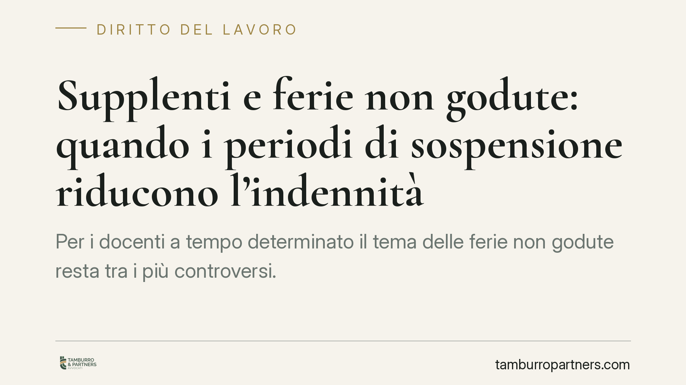

Supplenti e ferie non godute: quando i periodi di sospensione riducono l'indennità
Per i docenti a tempo determinato il tema delle ferie non godute resta tra i più controversi. La questione ruota attorno a una distinzione: i periodi di sospensione delle lezioni (Natale, Pasqua, pause regionali) possono valere come ferie già fruite, mentre i giorni tra fine lezioni e scadenza del contratto, se non assorbiti da un atto formale, restano in linea di principio monetizzabili. Un punto dove l'onere probatorio pesa.

Il contesto
Il supplente, come ogni lavoratore, ha diritto al riposo annuale. Quando il contratto cessa senza che le ferie siano state godute, matura in linea di principio un diritto all'indennità sostitutiva: una somma che compensa economicamente il riposo non fruito.
Il problema nasce dal calendario scolastico. L'anno di servizio del docente a termine è segnato da periodi di sospensione delle attività didattiche — vacanze natalizie, pasquali, eventuali soste deliberate a livello regionale — in cui il docente non tiene lezione. La domanda è se tali periodi debbano considerarsi fruizione di ferie, con conseguente riduzione dell'importo monetizzabile a fine rapporto.
Inquadramento normativo
Il diritto al riposo ha radici costituzionali: l'art. 36 Cost. qualifica le ferie annuali retribuite come diritto irrinunciabile del lavoratore. Sul piano europeo, l'art. 7 della direttiva 2003/88/CE impone agli Stati membri di garantire ferie annuali minime di quattro settimane.
La Corte di Giustizia UE ha chiarito che il diritto al riposo non può essere svuotato: nel caso *Schultz-Hoff* (C-350/06) ha affermato la tutela delle ferie non godute per impedimento; in *Bollacke* (C-118/13) ha riconosciuto il diritto all'indennità sostitutiva anche in capo agli eredi, confermando la natura patrimoniale del credito.
Nel pubblico impiego, tuttavia, opera un principio di tendenziale divieto di monetizzazione: l'art. 5, comma 8, del D.L. 95/2012 (convertito con L. 135/2012) stabilisce che le ferie non godute non danno luogo a corresponsione di trattamenti economici sostitutivi, salvo i casi di cessazione del rapporto non imputabili al lavoratore. La disciplina di dettaglio per il comparto è affidata al CCNL Scuola, che regola maturazione e fruizione delle ferie del personale docente e ATA, anche a tempo determinato, tenendo conto delle esigenze del servizio.
Implicazioni pratiche
La chiave è la distinzione tra due blocchi temporali.
I periodi di sospensione didattica (festività natalizie, pasquali, pause regionali) tendono a essere considerati occasione di fruizione delle ferie: in quelle giornate il docente non presta attività e può collocare il proprio riposo. Di conseguenza, questi periodi incidono riducendo l'ammontare dell'indennità eventualmente dovuta a fine contratto.
I giorni compresi tra la fine delle lezioni e la scadenza del contratto hanno natura diversa. In quella fascia il rapporto è ancora in essere ma le lezioni sono concluse. Perché tali giornate siano imputate a ferie — e quindi sottratte alla monetizzazione — occorre di norma un atto formale del dirigente scolastico che collochi espressamente il docente in ferie. In assenza di tale provvedimento, la pretesa a monetizzare resta più solida.
Il nodo è probatorio. Nel contenzioso di lavoro vale la regola generale sull'onere della prova: chi afferma di aver fruito del riposo — o di averlo correttamente collocato — deve dimostrarlo. Per il docente, questo significa che calendario scolastico, provvedimenti del dirigente e cedolini diventano documenti decisivi. Per l'amministrazione, l'assenza di un atto formale di collocamento in ferie indebolisce la tesi della fruizione.
Cosa fare in concreto
- Ricostruisci il calendario dell'anno di servizio: individua i periodi di sospensione didattica e le giornate comprese tra fine lezioni e scadenza del contratto.
- Verifica gli atti del dirigente: controlla se esistano provvedimenti formali di collocamento in ferie per le giornate successive al termine delle lezioni; la loro presenza o assenza orienta la qualificazione.
- Conserva la documentazione: cedolini, contratto, ordini di servizio e comunicazioni. In sede di contenzioso l'esito dipende in larga misura dalla prova documentale.
- Controlla i termini di prescrizione del credito retributivo prima di qualunque passo: lasciar decorrere il termine comporta la perdita del diritto.
- Prima di accettare un conguaglio a saldo, può essere opportuno un esame tecnico della posizione, così da verificare la corretta imputazione dei periodi e l'eventuale residuo monetizzabile.
Un'avvertenza sul metodo
La materia è attraversata da orientamenti non sempre uniformi e da una disciplina contrattuale che varia nel tempo. Qualunque valutazione va calata sul singolo contratto, sul calendario regionale di riferimento e sugli atti effettivamente adottati dalla scuola. Le affermazioni di principio non sostituiscono l'analisi del caso concreto.
---
*Contributo informativo a cura di Tamburro & Partners - Avv. Giuseppe Tamburro. Non costituisce parere legale.*
Ogni storia di lavoro ha i suoi tempi.
Se gestisci HR e vuoi un confronto su contenzioso, ispezioni o licenziamenti, scrivi allo studio. Ti rispondiamo entro un giorno lavorativo.